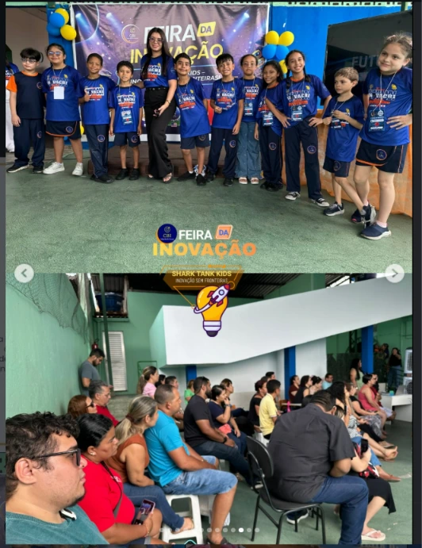
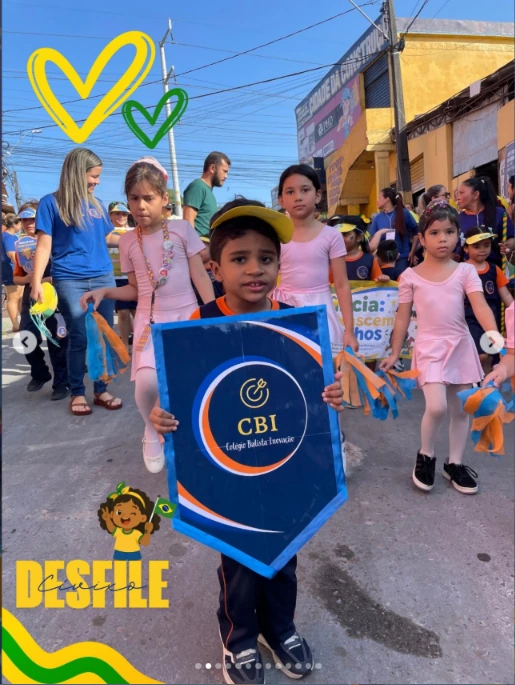
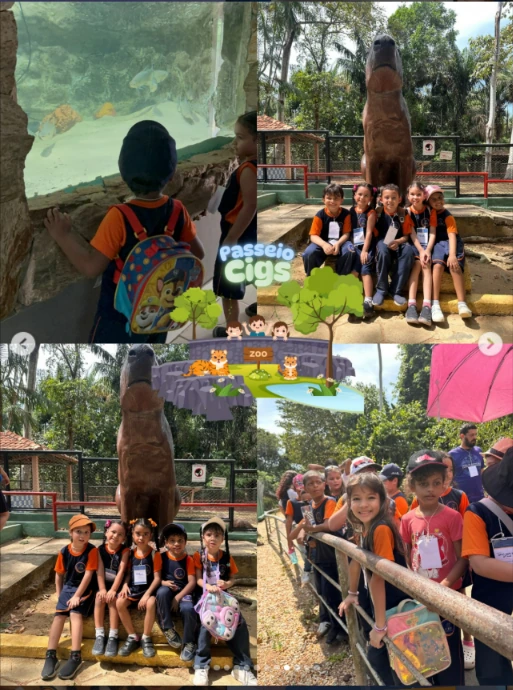
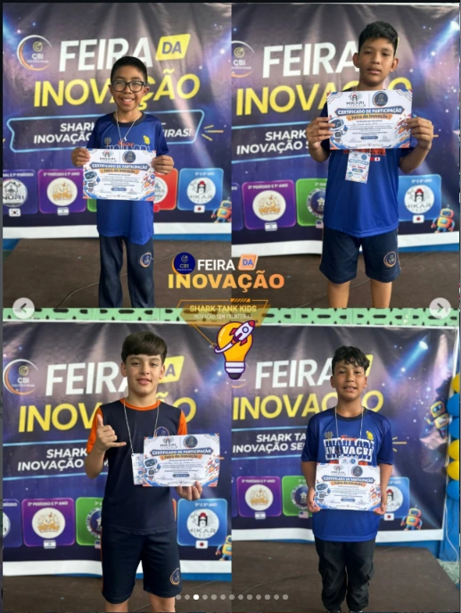
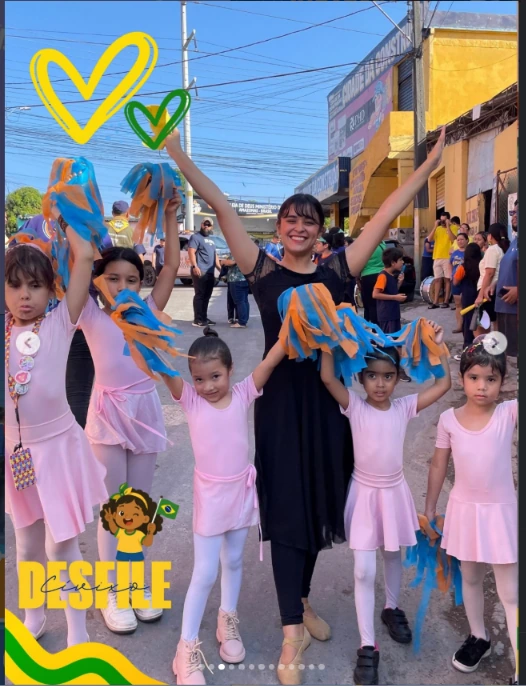

01
Formação Cristã
Princípios que acompanham a vida. Amor, respeito e responsabilidade fazem parte da convivência e da construção do caráter.
Do 1º Período ao 6º Ano, unimos ensino de excelência, valores cristãos e acolhimento. Seu filho aprende com alegria, e sua família participa de cada descoberta.
Educação Infantil e Ensino Fundamental • Manaus, AM


Escolher uma escola é escolher quem vai participar da história do seu filho. No Colégio Batista Inovação, recebemos essa confiança com acolhimento, responsabilidade e propósito.
Unimos princípios cristãos, ensino de excelência e espaço para novas ideias. Aqui, aprender também é descobrir talentos, cultivar o respeito e ganhar autonomia — com a família por perto em cada etapa.
Formar para o conhecimento.
Educar para a vida.
Conhecimento, valores e cuidado: os pilares de uma educação que olha para a criança por inteiro.
Princípios que acompanham a vida. Amor, respeito e responsabilidade fazem parte da convivência e da construção do caráter.
Aprender vai além de memorizar. Estimulamos perguntas, pensamento crítico e a confiança para encontrar novos caminhos.
Cada criança merece ser ouvida. Acolhimento e escuta ajudam a reconhecer emoções, criar vínculos e crescer com confiança.
Ambientes pensados para aprender, conviver e explorar. Cuidado com os espaços para uma rotina escolar mais tranquila.
A próxima descoberta do seu filho pode começar aqui.
Converse com nossa equipeDa primeira descoberta aos desafios do Ensino Fundamental, seu filho cresce com acompanhamento e propósito.

Brincar, imaginar e conviver são caminhos para aprender. Valorizamos o desenvolvimento motor, a linguagem e a socialização, respeitando cada etapa da infância.
Conheça a proposta de Educação Infantil
Da leitura aos projetos investigativos, conectamos o conhecimento à vida. Incentivamos o raciocínio lógico, a resolução de problemas e a construção de hábitos de estudo.
Conheça a proposta de Ensino FundamentalConciliar trabalho e família fica mais leve quando você sabe com quem contar. No CBI, o tempo a mais na escola combina aprendizagem, convivência e acolhimento.
Tutoria pedagógica e apoio nas atividades de casa.
Cuidado também nos momentos de se alimentar.
Esporte e cultura para explorar novas habilidades.
Pausas e convivência supervisionada na rotina.
Converse com a equipe sobre horários e atividades de cada modalidade.

Ideias ganham voz na Feira da Inovação. Um encontro de criatividade, comunicação e protagonismo dos estudantes.
A escola encontra a comunidade em um momento de participação, cidadania e apresentações especiais.
Olhares curiosos e novas descobertas. O contato com a natureza amplia a aprendizagem para além da sala de aula.
Depoimentos demonstrativos. Estes espaços aguardam relatos reais das famílias.
Ver nossa criança ganhar confiança para aprender e se expressar faz toda a diferença. O acolhimento e os valores vividos na escola são muito importantes para nossa família.
Para quem trabalha o dia todo, uma rotina escolar com cuidado e acompanhamento traz tranquilidade. Saber que há tempo para aprender, brincar e descansar é algo que valorizamos.